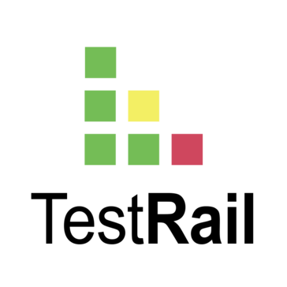
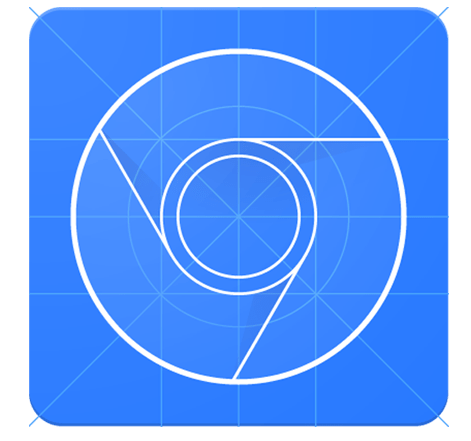

Artsiom Kurlovich
Looking for junior QA Test Engineer Job
Location: Minsk, ready for relocate
Date of birth: 21.05.1984
 +37544 754-21-66 Viber/Telegram
+37544 754-21-66 Viber/Telegram
 qa.a.kurlovich@gmail.com
qa.a.kurlovich@gmail.com
 Linkedin account
Linkedin account
 GitHub repository
GitHub repository
Tools
- TestRail (test documentation creation)
 Jira (bug reports creation)
Jira (bug reports creation)- HTML/CSS (this page was created by me)
 API (Postman, collections creation)
API (Postman, collections creation) Structured Query Language (select, order by, group by, inner left right outer join)
Structured Query Language (select, order by, group by, inner left right outer join)- JMeter (creation a simple scripts and running load tests)
- Git (init, add, diff, pull, push, branch, checkout, merge), GitHub repository
 IntelliJ IDEA (+Selenium IDE Recorder: setup environment, record actions and creation simple automation website tests)
IntelliJ IDEA (+Selenium IDE Recorder: setup environment, record actions and creation simple automation website tests)- Google DevTools (basic knowledge)
 Python (theory and algorithms by lectures
Python (theory and algorithms by lectures
MIPT, 60 hours) Android Studio (setup environtment, running apps)
Android Studio (setup environtment, running apps)
Skills
- Manual Testing
- Black box Testing
- Web Testing
- API Testing
- Mobile Testing
- GUI Testing
- Cross-Browser Testing
- Regression Testing
- Functional Testing
- Exploratory Testing
- Load Testing
- Ad hoc Testing
- Test cases
- Bug reports
- Agile Scrum methodology
Experience
- 10.2020-01.2021. Internship in BELHARD Academy.
Junior QA Engineer.
- Writing test cases and Bug reports.
- Doing Black box, Functional, Cross-browser, Web, GUI, API, Mobile, Regression tests.
- Working by SCRUM methodology. - Owner of Limited Liability Company.
Full cycle of organization management
- Negotiations with partners and customes.
- CRM-system "Megaplan" introduction.
- Banking transactions.
- Work with export and import contracts.
- HR.
- System administration. - 2007-2009г. Minsk Wheel Tractor Plant OJSC.
Marketer.
- Work with export contracts.
- Marketing researches.
- Search of new markets.
- Competitive products analysis.
Education and trainings
- 08.2020-10.2020 Software Testing Engineer. Professional level. BELHARD Academy.
- 06.2020-08.2020 Software Testing Engineer. BELHARD Academy.
- 02.2017-06.2017 Język polski (А2). Streamline.
- 09.2002-06.2007г. BSU, Economics Faculty, Manager-economist.
Others
- Languages:
- English (intermediate)
- Polski (elementary) - Personal qualities:
- setting and fulfilling difficult and new purpose in life, sagacity, responsibility, thoroughness, perseverance. - Hobbies:
- Learning technical literature, fishing, auto mechanics.